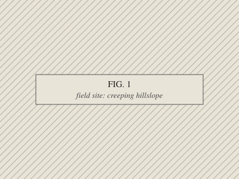
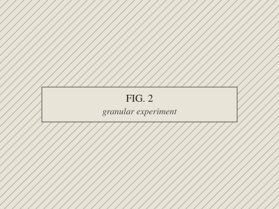
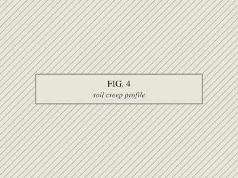
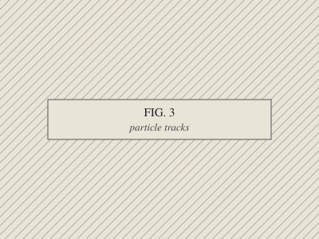
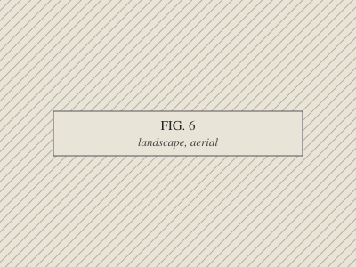

Postdoctoral Research Scholar, Los Alamos National Laboratory
Santa Fe, New Mexico
People have wondered for over a hundred years how soil moves downhill on slopes too gentle to slide.1 The standing explanation is disturbance: gophers, frost, rain, roots, all churning the ground. So we built a hillslope in the lab where we could switch the disturbances off. It crept anyway.2 It is still, as far as we can tell, creeping.
 Fig. 1. A sandpile, left alone in a quiet lab, keeps creeping, indefinitely, at rates much like real hillslopes. It slows as it settles. A change in temperature or humidity wakes it up again. Shaking it, oddly, does the opposite. |
 Fig. 2. Different grains, different walls, rougher and smoother. The creep didn't much care. The details did. |
 Fig. 3. Twenty-seven authors and one question: what kind of material is the ground? |
At Los Alamos I listen to things vibrate. Thin films and small sensors get played with sound, a laser reads how they ring, and we work backwards to how stiff they are and how tightly they're held.
| Fig. 4. A polymer film, stretched like a drumhead and played with sound, while a laser listens to how it rings. Two of its notes are enough to tell how tight it is and how stiff. |  Fig. 5. Small devices that turn vibration into voltage are hard to measure the same way twice, because they buckle. So we 3D-printed fixtures to hold them still. |
Before the sand, there were logs. Two months in the central Idaho wilderness with time-lapse cameras, a total station and water-level loggers, watching one logjam through a snowmelt season. A general theory of how logjams form, deform and collapse is in preparation.
 Fig. 6. About a thousand logs across Big Creek, Idaho. Not jammed. They shuffle downstream as the snowmelt rises, and settle back among their neighbors as it falls. |
Fig. 7. A logjam in miniature: a flume in the lab, where the river can be turned up and down at will. |
And a few conference talks:
“The seedy underbelly of yield: how measuring verrrrrry slow grain motion
changes our view of landscapes” (EGU, 2023)
“Creep is relaxation” (AGU, 2019)
“Soil creep without gophers and other complications” (AGU, 2018)
I study the physics of slowly deforming landscapes: how soil and rock creep, flow, and fail, and what that does to the shape of the land over time. I work in the field, in the lab, and on the computer.
I'm a postdoc at Los Alamos National Laboratory. Before that I did my Ph.D. in Earth & Environmental Science at the University of Pennsylvania.
You are visitor number
042069